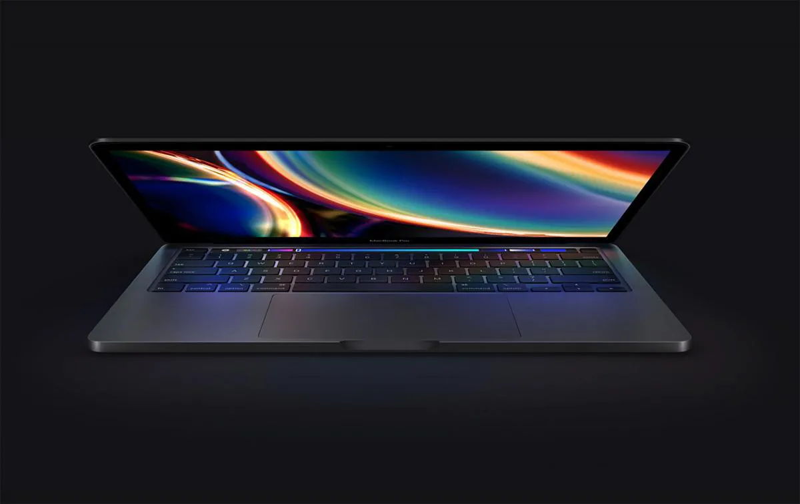
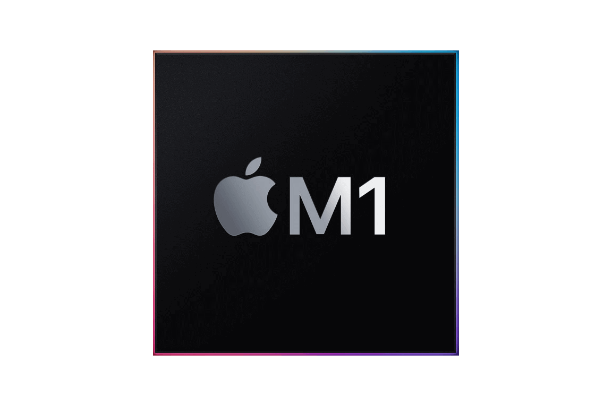

Tudo Pro para decolar.
O MacBook Pro de 13 polegadas está voando com toda a potência e velocidade do novo chip M1 da Apple. O desempenho da CPU ficou até 2,8 vezes melhor. A velocidade gráfica aumentou em até cinco vezes. O Neural Engine da Apple está mais avançado do que nunca e deixou o aprendizado de máquina aé 11 vezes mais r;apido. E a bateria com até 20 horas de duração garante a maior autonomia de todos os tempos em um Mac. O notebook profisional mais popular da Apple mudou e vai mudar tudo.

O poderoso chip M1 da Apple está aqui.